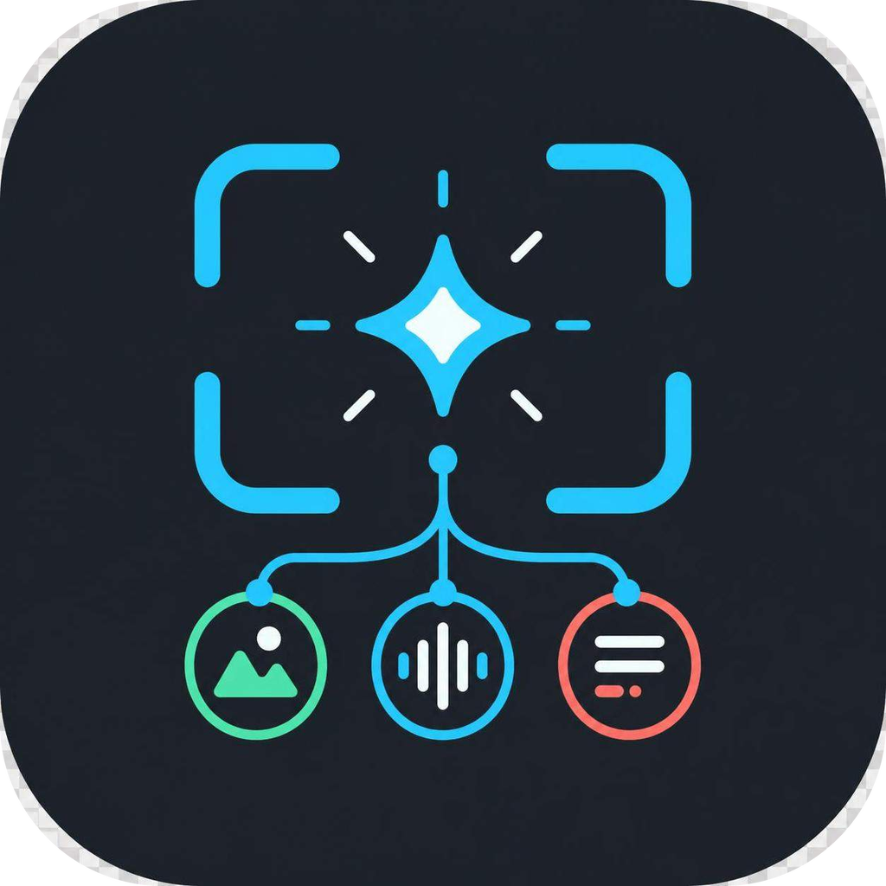
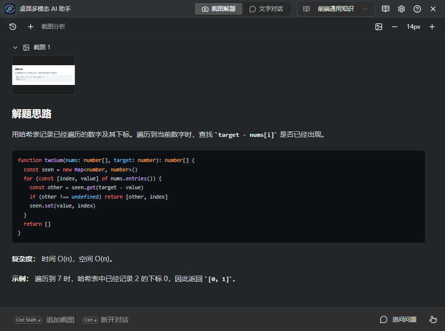
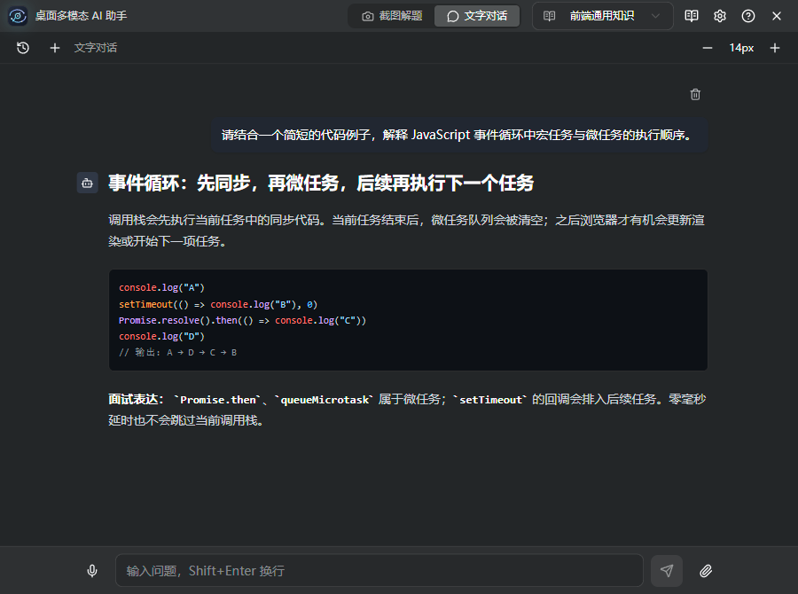
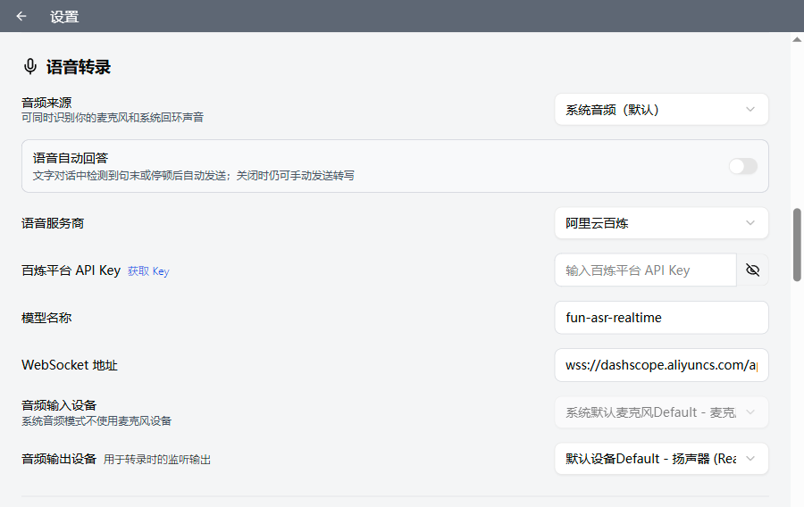
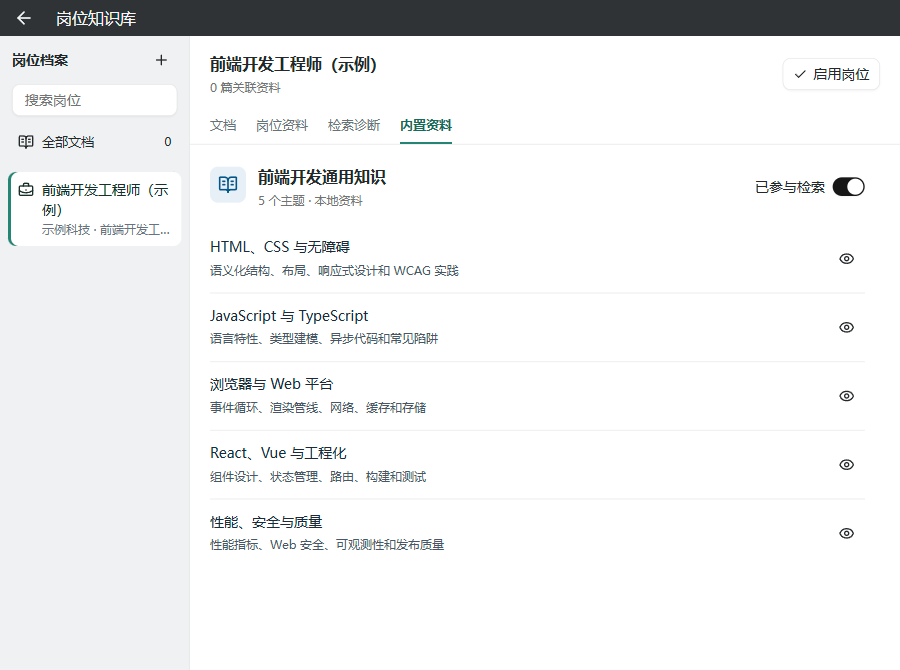

截
截图工具
AI
聊天窗口
REC
录音转写
PDF
简历 · JD · 笔记
面试准备、技术学习、读懂屏幕上的内容
还在四个窗口之间
来回切换
？

Open Source · Electron Desktop App
桌面多模态
AI
助手
把
截图
、
语音
和
岗位资料
，放进同一个工作区
01
截图解题
一个快捷键截屏，视觉模型边想边写
Ctrl
+
Enter
流式输出解答，Markdown + 代码高亮
追加截图补全题目，结合上下文追问
算法 / 英语 / 通用场景，可自定义提示词


02
文字对话
独立的多轮问答工作区，模型随你配
内置 DeepSeek，兼容任意 OpenAI 接口
支持 Chat Completions / Responses 协议
附加代码、Markdown、JSON、CSV 文件
截图模型与文字模型分开配置

03
实时语音转录
LISTENING · 系统音频 + 麦克风
一键发到文字对话
随截图一起提交
阿里云百炼 · 火山引擎豆包
04
本地岗位知识库
回答结合你的 JD、简历和项目经历
PDF / DOCX / TXT / Markdown 本机解析
本地索引，只发送命中的少量片段
内置前端通用知识包，开箱即用

PDF
个人简历.pdf
DOCX
项目说明.docx
MD
面试笔记.md
JD
前端开发工程师
SOURCES · 本次命中
项目说明.docx · 性能优化 | 浏览器与 Web 平台
05 · Desktop
桌面辅助，随手可用
透明置顶窗口
鼠标穿透
悬浮工具条
快捷键自定义
透明度 / 位置随调
桌面多模态
AI
助手
Electron 37
React 19
TypeScript
Vercel AI SDK
本地检索
实时 ASR
github.com/
YangHeng66/interview-coder-cn
开源可用 · 觉得有用就点个
★ Star
CC BY-NC 4.0 · 仅限非商业使用 · API Key 加密保存在本机
桌面多模态 AI 助手